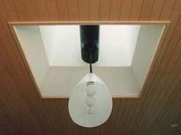
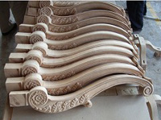
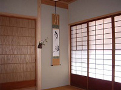
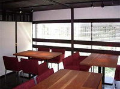
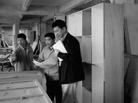

Ryo Architects
あなたの夢の家創り、 店創りのお手伝いをする 設計事務所です。
お気軽にご連絡下さい。
〒520-0016 滋賀県大津市比叡平1-11-27





Concept設計について
設計は、クライアントと、
私たちとのコミュニケーションから始まります。
私たちは、クライアントと、お互いフラットな関係で、専門的な立場から、対等なコミュニケーション（ざっくばらんなお話）を通して、どのようなイメージ、スタイルで、住まい方を希望しているのかを読み取り、それをもとに、さらにクライアントの個性を出せるようなユニークな発想、提案をして、建築、家づくりというものを、創っていきたいと思います。
最後には、｢良いものをつくって良かった！｣と言われるような仕事を目指して・・・。
設計についてWorks住宅・建築作品
住宅・建築作品の一覧


Work Flow業務について
受付、相談から竣工までの流れ
- 基本計画受付、相談
調査、企画
基本計画 - 基本設計基本設計
- 実施設計実施設計
工事見積
建築確認 - 施工監理工事監理
Profile事務所概要
- 事務所名
- 良建築設計事務所
- 所在地
- 〒520-0016 滋賀県大津市比叡平1-11-27
- 連絡先
- TEL・FAX ： 077-529-0476（見本のため動きません）
E-mail ： ryo-archi@gaia.eonet.ne.jp（見本のため動きません） - 事務所登録
- 一級建築士事務所登録 滋賀県知事 登録（ロ）第 1621 号